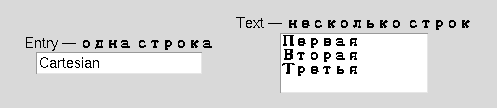

Глава 16 · Создаём классные приложения с Tkinter
Множество полей ввода
Entry для одной строки, Text — для нескольких: два способа получить текст от пользователя.
Множество полей ввода
Поле ввода (Entry) — однострочное текстовое
поле, куда пользователь может что-то напечатать:
polya_vvoda.py
import tkinter as tk
root = tk.Tk()
label = tk.Label(root, text="Введите имя:")
label.pack()
entry = tk.Entry(root)
entry.pack()
def pokazat_imya():
imya = entry.get() # достаём текст из поля
print(f"Привет, {imya}!")
button = tk.Button(root, text="Отправить", command=pokazat_imya)
button.pack()
root.mainloop()entry.get() возвращает текущий текст поля — обычную строку,
с которой можно работать, как с любой другой (глава 8). entry.insert(0, "текст")
вставляет текст программно, entry.delete(0, "end") очищает поле.
Одна строка текста. Строка за строкой
Entry подходит для короткого текста в одну строку — имени,
числа, пароля. Для многострочного текста используют другой виджет,
Text:

mnogostrochnyj_tekst.py
text_box = tk.Text(root, height=5, width=30)
text_box.pack()
def pokazat_tekst():
content = text_box.get("1.0", "end-1c") # с начала до конца, без завершающего \n
print(repr(content))Индекс "1.0" — не опечатка
У
Text своя система индексов: "1.0" означает «строка 1, символ 0» — то есть самое начало текста. Это не связано с числами float из главы 4 — просто текстовая метка позиции, и обычная индексация строк Python (text[0]) к Text не применяется."end" против "end-1c"
Text всегда добавляет один завершающий символ перевода строки в конец своего содержимого. .get("1.0", "end") включает этот лишний \n, которого пользователь не печатал. Если нужен именно видимый пользователем текст без этого технического довеска — используйте .get("1.0", "end-1c") («конец минус один символ»).Практика: Entry и Text
Модуль tkinter открывает нативное окно Python — выполните локально в VS Code, PyCharm или Jupyter
Практика выполняется локально